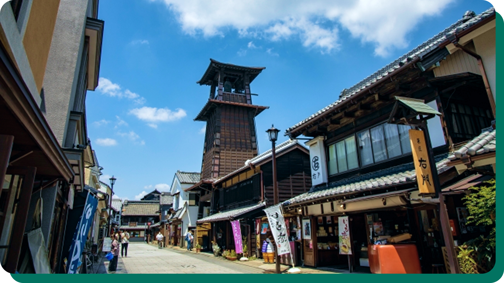

ちょっとディープな川越移住のススメ
川越って、住んでもいいかも。
川越は今、“住みやすい街”としても注目されています。
伝統ある街並みと、新しいカルチャーがほど良く混じりあうこの街で、
のんびりしたい人も、都心への近さを求める人も、ちょうどよく暮らせる。
そんな川越の「日常」を、地元目線で紹介します。
川越の人口は約35万人。都心から約30㎞のベッドタウンでありながら、歴史と伝統が残る観光地です。スーパーや病院も揃っていて、暮らしに困ることはほとんどない。通勤や通学にも便利で、ファミリー層をはじめ移住者が増えています。
伝統を誇る「川越まつり」は、豪華絢爛な山車と、市内外から訪れるおよそ1万人もの人々の熱気につつまれる熱～いお祭り。他にも「小江戸マラソン」や花火大会、最近では「BAR FESTA」など、年間を通してさまざまなイベントが開催されます。
観光エリアには、名物「うなぎ」の名店から話題のスイーツまで、幅広いお店が並びます。路地には小さなカフェやBARも多く、散歩するにもぴったり。駅前にある商店街には飲食店がずらりと並び、地元の人たちでにぎわいます。
 自然・公園
自然・公園
すこし足を延ばせば、緑豊かな公園が複数あります。マイカーがあると選択肢も広がるのでオススメ。「川越水上公園」ではスワンボートが楽しめて、テニスコートも完備。春には満開の桜、夏には大型プールと、四季を存分に味わえます。
30代・子育てファミリー
子供が産まれたのをきっかけに家族で移住しました。スーパーは広くて鮮度がいいし、子連れでも買い物しやすい。自然豊かな公園があるから、のびのびと子育てできる環境です。伝統的な祭りに参加できるのも楽しいですよ。町内ごとに山車をひいて盛り上がります！
40代・テレワーク中心
都内に住んでいたけど、もう少し広い家に住みたくて川越へ。都心へのアクセスが快適だから、出社する時も問題なしです。地元の若者がやっている店も多くて、活気があるし居心地がいい街だと思う。おしゃれな角打ちや居酒屋もあるから、友達を呼ぶと喜ばれますよ。
40代・夫婦で飲食店を経営
引っ越してきた当初は「観光の街ってどうなんだろう」と思ってたけど、暮らしてみたら静かな住宅地がしっかりあって、思った以上に落ち着いてる街。観光地らしくオープンな街でもあり、地元の人たちが温かく受け入れてくれたのが嬉しいです。
60代・夫婦ふたり暮らし
ほどよく人がいて、ほどよく静かな川越が気に入って移住。もう車の免許を返納したけど、病院や買い物も近くて生活には困らないので、老後を見据えても安心かなと思ってます。伝統を大切にしながらも変化している街だから、住んでいて楽しいです。
移住を考えたら
まずはこちらへ
川越市では、住まいや子育てに関するサポートも整ってきています。
空き家バンクや定住促進の制度など、相談できる窓口もあるので
まずは下記サイトをチェックしてみてください！
-
🔗 川越市HP（移住・行政・子育て情報）
https://www.city.kawagoe.saitama.jp/ -
🔗 小江戸川越ウェブ（歴史・イベント・観光情報）
https://koedo.or.jp/